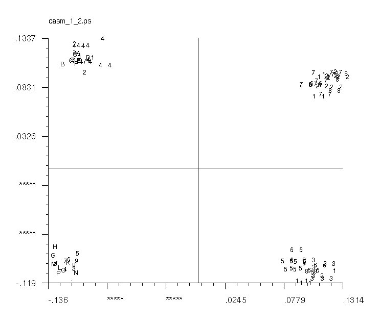

(Used in 'CA S')

| .OPERATION: | CA SM | ; Make map |
| .IMAGE OR PIXEL COORDINATES (I/M): | I | ; Image coordinates |
| .COORDINATE FILE PREFIX: | cas_c | ; File prefix (input) |
| .NO. OF HORIZONTAL PATCHES: | 1 | ; Use 1 patch |
| .TWO FACTOR NUMBERS FOR MAP (E.G.: 1,5): | 1,2 | ; Factors |
| .SYMBOL, ASSIGN SYMBOL, CLASS, DOC, ID (S/A/C/D/I): | S | ; Use symbol |
| .NUMBER OF SD OR <CR>=2.3: | 2.00 | ; SD |
| .1=FLIP #1/ 2=FLIP #2/ 3=FLIP 1+2/ <CR>=NO FLIP:<CR>: | <CR> | ; No flip |
| .POSTSCRIPT OUTPUT FILE: | casm_map_2vs1 | ; Map file (output) |
| .TEXT SIZE FOR AXIS AND DATA (USE <CR> FOR DEFAULT = 10,9): | <CR> | ; Use default |
| .ENTER X AXIS OFFSET | <CR> | ; Use default |
| .ENTER NEW LOWER, UPPER AXIS BOUNDS OR <CR>: | <CR> | ; Use default |
| .ENTER NEW AXIS LABEL UNIT AND TICKS / LABEL OR <CR>: | <CR> | ; Use default |
| .ENTER LABEL NO. TO EDIT...OR <CR> TO CONTINUE: | <CR> | ; Use default |
| .ENTER Y AXIS OFFSET: | <CR> | ; Use default |
| .ENTER NEW LOWER, UPPER AXIS BOUNDS OR <CR>: | <CR> | ; Use default |
| .ENTER NEW AXIS LABEL UNIT AND TICKS / LABEL OR <CR>: | <CR> | ; Use default |
| .ENTER LABEL NO. TO EDIT... OR <CR> TO CONTINUE: | <CR> | ; Use default |
| ORIGINAL INPUT FILES (Used in 'CA S') |
|---|
| |
| sma*** |
| INPUT TEXT FILE (Truncated) |
|---|
| cas_c_IMC |
| OUTPUT MAP FACTOR 2 VS 1 |  |
|---|
| casm_1_2 |